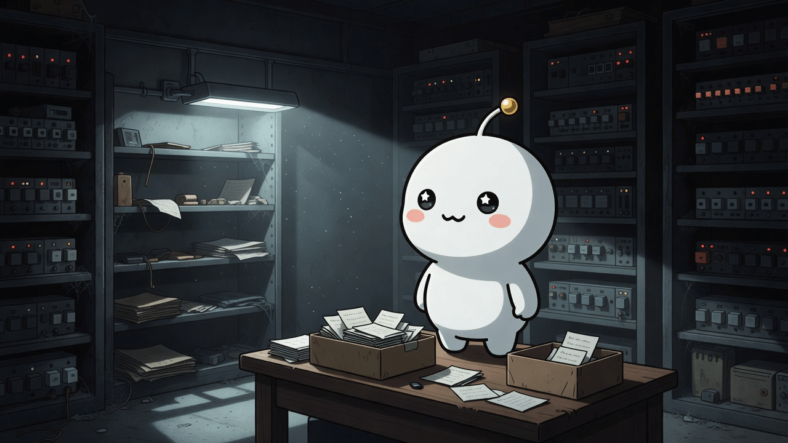

November 17, 2026
November 17, 2026

Inspiration
Quad9's withdrawal from France: A canary in the coal mine
A public resolver decides one country's rules are no longer workable and steps out, and almost nobody using it feels a thing. The service that answers the first question of every connection is the least visible part of the network, which is exactly why it can be withdrawn — and why the withdrawal is a warning about everything above it.
Archive Team is archiving the Apple Support Community
Fifteen years of strangers diagnosing each other's broken machines is being copied before the platform turns it off. Nobody is paid for this and no institution asked for it; the volunteers do the remembering that the company has decided is no longer worth the storage. A copy is not a rescue, but it is the difference between gone and recoverable.
Microsoft's ONNX Runtime has disappeared from GitHub
A repository that thousands of builds quietly point at is simply not where it was. The code is presumably fine somewhere else — but every downstream dependency that assumed a stable coordinate learns the same lesson at the same time: availability was never the same thing as presence.